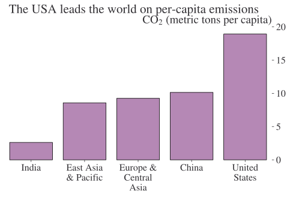

In praise of APIs (application programming interfaces)
code
data
Author
Arthur Turrell
Published
December 18, 2022
In this blog, I look at some of reasons why APIs are such a great way to share data.
APIs make it possible for users to plug data directly into software, dashboards, websites, reports, and analysis in a consistent, machine readable format that favours automation. They are the best practice way to share data between expert users and organisations, and are an important intermediary for enabling data to reach a wider audience—giving a path to significantly increased impact for data that anyone has decided to share. Leading statistical institutes provide their data via APIs, and UK government departments increasingly share data through APIs too.
In a previous post, I looked at one API in particular—the ONS API.
What is an API?
APIs, or application programming interfaces, are a set of rules and protocols that enable communication between different software systems. They allow different systems to exchange data and functionality programmatically. They are programming language agnostic, and sometimes make data available in several formats.
In the context of data and statistics, APIs are particularly useful because they allow organisations to access and use data from a variety of sources in a consistent and controlled manner. For example, a government department might wish to use APIs to reproducibly and reliably access data from a national statistical office.
It’s easiest to show how APIs work with an example. Let’s pull down CO2 emissions per capita by country from the World Bank using the pandas_datareader package in Python. pandas_datareader provides convenient access to a wide range of APIs including those serving up data from the US Federal Reserve (FRED), the World Bank, the OECD, the Bank of Canada, Eurostat, and more.
import textwrapfrom pandas_datareader import wbdf = wb.download( # download the data from the world bank indicator="EN.GHG.ALL.PC.CE.AR5", # indicator code country=["US", "CHN", "IND", "Z4", "Z7"], # country codes start=2019, # start year end=2019, # end year)df = df.reset_index() # remove country as indexdf["country"] = df["country"].apply(lambda x: textwrap.fill(x, 10)) # wrap long namesdf = df.sort_values("EN.GHG.ALL.PC.CE.AR5") # re-orderdf.head()
country
year
EN.GHG.ALL.PC.CE.AR5
3
India
2019
2.622268
1
East Asia\n& Pacific
2019
8.575187
2
Europe &\nCentral\nAsia
2019
9.249031
0
China
2019
10.140708
4
United\nStates
2019
18.921383
There are several features of note:
we only pulled down the data we needed
we were able to get data straight into our analytical tool (here, Python)
getting the data for the period we want is as simple as changing the year
Having downloaded the data, let’s now plot it:
import seaborn as snsfig, ax = plt.subplots()sns.barplot(x="country", y="EN.GHG.ALL.PC.CE.AR5", data=df.reset_index(), ax=ax)ax.set_title(r"CO$_2$(metric tons per capita)", loc="right")plt.suptitle("The USA leads the world on per-capita emissions", y=1.01)for key, spine in ax.spines.items(): spine.set_visible(False)ax.set_ylabel("")ax.set_xlabel("")ax.yaxis.tick_right()plt.show()

This shows how data can be pulled straight down into analytical tools, reports, forecasts, and so on; any output or analysis you can think of.
Why are APIs brilliant?
Programmatic access to data has a number of clear benefits:
Data are provided in a consistent, machine readable format—this can save hours of work for each file and enables automation
users can build other tools on top of APIs and APIs integrate directly into analytical tools
APIs are accessible by a range of open source (and free) software
APIs can provide only the data that the user needs (they enable filtering)
APIs can provide a data provider with more granular information on what data have been requested than a bulk download can
an organisation can provide data to itself (eg across teams) without one team having to bother another; teams within the organisation can also consume the API
the date of the ingestion of data can be easily including in the metadata that the API send—this is really useful to anyone working with real-time data applications (eg nowcasting) or if a mistake is subsequently found in a series
using APIs to serve data encourages the use of consistent taxonomies (eg country names) that will ultimately aid end-users by enabling them to more easily link data
secure APIs allow organisations to share sensitive data in a programmatic way and, while no method of data transfer can ever be 100% secure, APIs that follow the best practices for security are thought to involve less risk than emailing files
Directly integrating with analytical tools has a number of benefits for auditability and accountability given that analytical tools can be used with code, and code can be put under version control—which means to-the-second, to-the-line auditing of who changed what when and easy-to-reverse changes should errors be discovered.
Additionally, when data are shared only as files, it’s so often as Microsoft Excel files, which can go wrong in some pretty serious ways:
Excel is a proprietary format that is harder to use without buying software from a particular vendor
Excel mixes analysis and data storage (which is bad practice)
Excel changes data
Excel is limited in storage size and file-types it can handle
Excel is not easily auditable (code-first approaches allow for to-the-second, to-the-line audit).
That said, you can improve the provision of data through Excel by making it machine readable or by making it consistent, perhaps making use of the excellent GPTables (good practice tables) package created by the UK’s Office for National Statistics (full disclosure: I didn’t work on this package, but some colleagues did).
It’s also important to note that providing a downloadable file and an API is not mutually exclusive—to serve the widest range of users, it’s a good idea to provide both. But it’s important that they feed off the same underlying database in the same way and so are 100% consistent.
The main downside of APIs is that they are more difficult to use for all but expert users (though this category has expanded in recent years as the world becomes more code-savvy and it now arguably includes everyone from academics to data journalists to data enthusiasts). This is why it’s important to make APIs available alongside other ways to access the data.
To lower the barrier to using an API, there are a couple of options. They can be integrated into easier-to-use tools (like the pandas_datareader package) or they can be provided alongside an API ‘query builder’ that gives rapid feedback on whether a query is valid or not (open street map API’s ‘overpass turbo’ is a good example).
API Best Practice
There are a number of API standards out there, and the best one depends on the context. In the UK, there is gov.uk guidance on APIs.
1 The BIS (Bank for International Settlements), ECB (European Central Bank), EUROSTAT (Statistical Office of the European Union), IMF (International Monetary Fund), OECD (Organisation for Economic Co-operation and Development), UN (United Nations), and the World Bank.